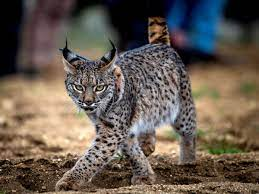
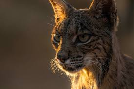
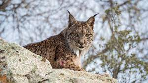
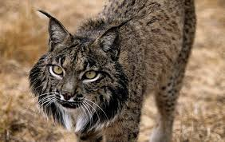
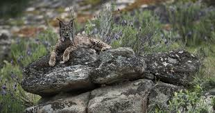

El Lince
Sus características orejas puntiagudas están terminadas en un pincel de pelos negros rígidos que favorece su camuflaje al descomponer la redonda silueta de su cabeza.

Hábitat y distribución
También son características las patillas que cuelgan de sus mejillas.
Aparecen a partir
del año de vida, cuando apenas cuelgan por debajo de
la barbilla y aumentan de tamaño con la edad. Los machos tienen las
patillas y los pinceles
negros y más largos que las hembras.
Su fórmula dentaria es 3/3, 1/1, 2/2, 1/1 = 28.
Su coloración varía de pardo a
grisáceo con los flancos moteados de negro.
Existen tres patrones de pelaje:
- Mota fina: con numerosas manchas de pequeño tamaño y repartidas uniformemente y de manera densa, que tienden a concentrarse en los flancos laterales.
- Mota gruesa A: las manchas son de mayor tamaño y tienen cierta tendencia a disponerse en líneas, apareciendo dos o más parejas de motas de mayor tamaño a nivel de los hombros.
- Mota gruesa B: las motas son del mismo tamaño que en la mota gruesa A, pero no se aprecia ninguna ordenación específica ni las manchas de los hombros.

Los machos adultos pesan un promedio de 12,8 kg y las hembras sobre 9,3 kg, llegando a pesar los machos hasta 20 kg.
Ambas son distintas especies, simpátricas en Europa Central durante el Pleistoceno.
La época de la separación se estima que ocurrió mucho antes que la separación de los linces eurasiáticos y el lince canadiense (Lynx canadensis).
Se considera que los linces eurasiáticos e ibéricos comparten como antecesor a Lynx issiodorensis, el ibérico en Europa y el lince eurasiático (que más tarde dio lugar al lince de Canadá) en China.
Aunque las áreas de distribución del eurasiático y del lince ibérico nunca se solaparon mucho, y han llegado a estar esencialmente separados en épocas recientes, los dos linces pudieron coexistir hasta finales del siglo xix en los Pirineos y quizá en la costa norte de España.

Costumbres y alimentación
Esta especie le aporta del 80 al 90 % de su alimentación.
También consume anátidas, ungulados, perdices, pequeños mamíferos y otras aves.
La aparición de estas presas en su dieta depende de la época del año, de la disponibilidad de presas y de la zona.
La proporción de conejos en la dieta disminuye levemente en los meses del invierno, cuando el número de conejos están en un punto bajo anual.
En este tiempo, cazan cervatillos y muflones juveniles.
En las marismas del Coto de Doñana, a lo largo de la costa sudoccidental española, los patos son un recurso alimenticio estacional importante desde marzo a mayo,
durante la época de cría. Las necesidades energéticas del lince ibérico se ha estimado que equivalen a aproximadamente un conejo por día.

Protección y conservación
Hoy[¿cuándo?] la especie que ocupa esta área alcanza la mitad de la talla de sus congéneres de Europa central.
La península ibérica es la única parte de la región paleártica que posee una relativamente alta densidad de lagomorfos (conejos), similar a la encontrada en Norteamérica, donde hay espacio para dos especies de linces cazadores de lagomorfos: el bobcat o lince rojo (Lynx rufus) y el lince canadiense (Lynx canadensis).

Solo en puntos muy concretos parece que la especie se ha mantenido en buen estado. Solamente la población del sur de España, que consiste en tres subpoblaciones, se cree que es viable, estando compuesta por unos cientos de linces. Los efectivos de las subpoblaciones restantes se reparten en pequeños núcleos, difícilmente viables, de unas decenas de individuos.
El lince ibérico fue declarada especie en peligro en 1986 por el centro de seguimiento de la IUCN.
También está incluida en los Catálogos Regionales de Cataluña (Categoría: A. Anexo II), Navarra (Extinguida), Castilla-La Mancha, Región de Murcia y Comunidad de Madrid (En peligro de extinción).
